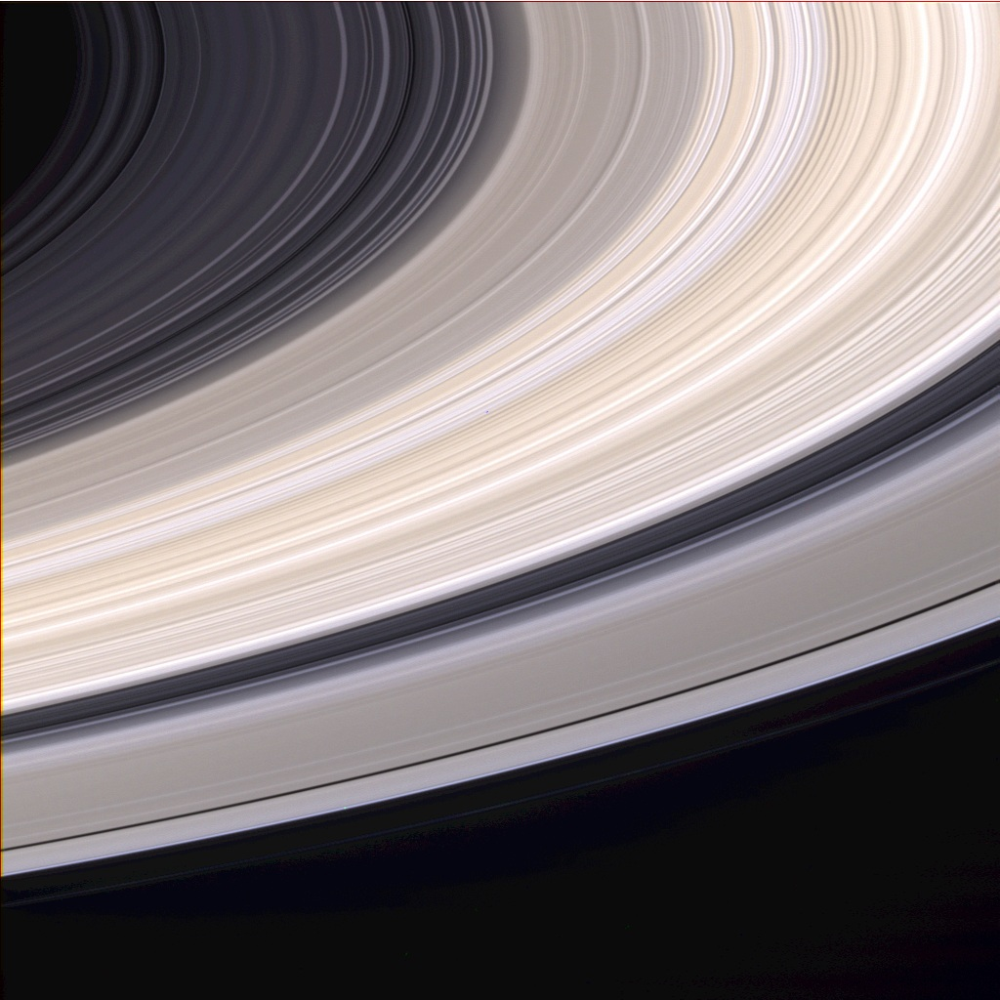

Небесно тяло се нарича обект от естествен произход, видим в небето. Небесни тела са обекти като звезда, планета, спътник, астероид, пръстен, както и системи, изградени от тях.
Видове
Звезда е небесно тяло, представляващо голямо кълбо газ (плазма в хидростатично равновесие), произвеждащо енергия чрез термоядрен синтез, основно превръщане на водород в хелий. Тази енергия се разпространява в пространството под формата на електромагнитно излъчване. Звездите в нощното небе блещукат (трептят) поради многобройните отражения и пречупвания на светлината при преминаването ѝ през земната атмосфера.
Според астрономите, познатата вселена съдържа поне 70 секстилиона (7 x 1022) звезди. Най-близката до Земята звезда е Слънцето. Светлината от него достига до нас за 8 минути. Ако изключим Слънцето, най-близката звезда е Проксима Центавър, която е отдалечена на 40 трилиона километра. Нейната светлина стига до Земята за 4,3 години.
Много звезди са гравитационно свързани с други звезди, оформяйки кратна звезда (двойни звезди или звезди с повече компоненти). Съществуват също и по-големи групи (с повече и по-раздалечени компоненти), наречени звездни купове. Звездите не са разпределени равномерно във вселената, а са групирани в галактики. Една типична галактика съдържа стотици милиарди звезди. Звездите от нашата галактика (Млечният път) са разположени във всички посоки спрямо наблюдател от Земята. Те се групират в области от небесната сфера, наречени съзвездия.
Планета (на гръцки: πλανήτης – странник, пътешественик) е тяло с достатъчна маса, за да приеме кръгла форма под действието на силата на гравитацията, което обикаля около звезда и не произвежда енергия чрез термоядрени реакции. До 1990 г. са известни девет планети (всички в нашата Слънчева система). През 2006 г. се въвежда понятието планета-джудже. За да бъде определено като планета, едно тяло трябва да отговаря на допълнителния критерий да е разчистило орбитата си. От този момент Плутон се определя като планета-джудже (с това планетите в Слънчевата система стават 8). Към 27 август 2010 г. са известни 490 планети, като всички новооткрити планети са екзопланети (планети, намиращи се извън Слънчевата система).
Смята се, че планетите се формират при сгъстяване на облака от газ, от който една звездна система се е зародила във формата на диск, преди в ядрото на протозвездата да започнат да протичат термоядрени реакции. Впоследствие, протопланетарният диск бива разпръснат под въздействието на слънчевия вятър на младата звезда.
Планетарен пръстен e образувание или система от образувания във формата на плосък диск около дадена планета, съставено от космически междупланетарен прах, лед и газове.
Съставът на планетарните пръстени може да бъде разнообразен: твърди силикатни материали, прах, газове. Големината на обектите също варира, като е възможно да има и скали с по-големи размери. Понякога в самите пръстени или в близост до тях се откриват и по-малки спътници, наречени спътници-овчари.
Първите открити пръстени на планета се пръстените на Сатурн през XVII век. Първи ги наблюдава Галилео Галилей през 1610 г., като поради ниското качество на използваната оптика по това време той е видял само „придатъци“ към страните на Сатурн. През 1655 г. Кристиан Хюйгенс използва по-съвършен телескоп от Галилей и установява, че това са пръстени около планетата.
Всички газови гиганти в Слънчевата система имат пръстени. Най-забележими са тези на Сатурн. Те могат да се наблюдават от земята с по-прости телескопи. Пръстените на Юпитер са тънки и са съставени предимно от прах. За планетата Уран се твърди, че тя имала спътник който се разбил в нея и нейният планетарен пръстен е образувван от неговите останки.

Спътник в Космоса, в най-общия смисъл, се нарича обект, който е в орбита на друг обект. На практика спътникът е обект от естествен или изкуствен произход, който се намира в орбита около небесно тяло.
Основните критерии за определяне на даден обект като спътник е центърът на масите на 2 обекта, свързани чрез гравитация, да се намира във вътрешността на основното тяло. В група от обекти спътник е това тяло, което има по-малка маса. Система от 2 тела с приблизително еднакви маси се нарича двойна система и е трудно да се определи кое от телата е спътникът.
Всички тела, които са част от Слънчевата система, включително и Земята, са спътници на Слънцето или на някое друго тяло от системата.
Според произхода си спътниците се делят на естествени и изкуствени.
Астероид (от старогръцки ἀστήρ – звезда и εἶδος – като, във формата на) е неголямо планетоподобно небесно тяло на орбита около Слънцето. Астероидите се смятат още за малки планети или планетоиди, с размери, много по-малки от тези на същинските планети.
За повечето астероиди се смята, че са останки от протопланетарния диск преди 4,5 милиарда години, от който са формирани планетите, но не са погълнати от тях или изхвърлени извън Слънчевата система. Някои астероди имат собствени спътници. Почти всички астероиди се намират в астероидния пояс, на елиптични орбити между тези на Марс и Юпитер.